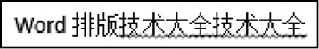
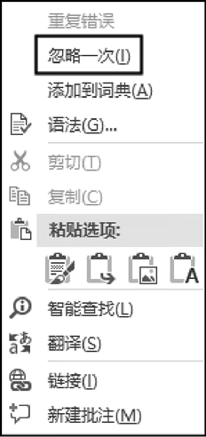
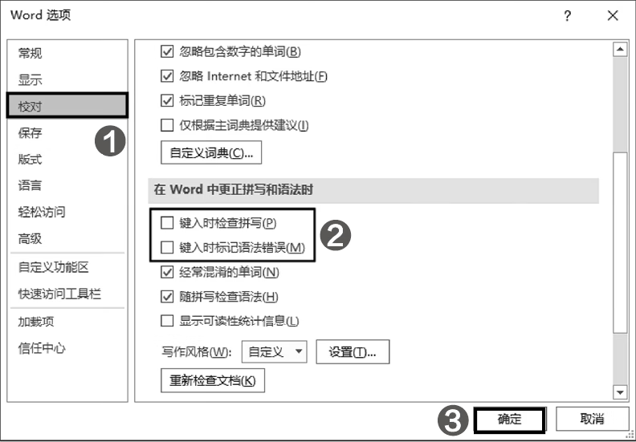

首页 > 编程笔记
Word删除文字下方的波浪线
在文档中输入一些英文单词或一些字母之后，系统会自动在这些内容的下方添加波浪线，如图 1 所示，一个页面中包含很多波浪线会影响视觉效果。
出现该问题是由于 Word 校对功能中的拼写和语法两项检查在起作用，当系统发现文档中的某些内容不符合语法规范或拼写有误时，就会自动为这些内容添加波浪线以提醒用户。
右击包含波浪线的内容，在弹出的菜单中选择【忽略一次】命令可去除该内容的波浪线，如图 2 所示。
如需去除文档中所有内容下方的波浪线，则需要关闭拼写和语法检查功能。
单击【文件】【选项】命令，打开【Word选项】对话框，在左侧选择【校对】选项卡，然后在右侧取消选中【键入时检查拼写】和【键入时标记语法错误】两个复选框，单击【确定】按钮，如图 3 所示。

图1：内容下方显示波浪线
图1：内容下方显示波浪线
出现该问题是由于 Word 校对功能中的拼写和语法两项检查在起作用，当系统发现文档中的某些内容不符合语法规范或拼写有误时，就会自动为这些内容添加波浪线以提醒用户。
右击包含波浪线的内容，在弹出的菜单中选择【忽略一次】命令可去除该内容的波浪线，如图 2 所示。

图2：使用【忽略一次】命令去除波浪线
图2：使用【忽略一次】命令去除波浪线
如需去除文档中所有内容下方的波浪线，则需要关闭拼写和语法检查功能。
单击【文件】【选项】命令，打开【Word选项】对话框，在左侧选择【校对】选项卡，然后在右侧取消选中【键入时检查拼写】和【键入时标记语法错误】两个复选框，单击【确定】按钮，如图 3 所示。

图3：关闭拼写和语法检查功能
图3：关闭拼写和语法检查功能
关注公众号「站长严长生」，在手机上阅读所有教程，随时随地都能学习。内含一款搜索神器，免费下载全网书籍和视频。

微信扫码关注公众号